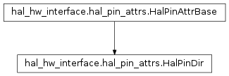
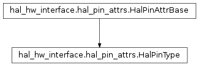

hal_hw_interface.hal_pin_attrs module¶
-
class
hal_hw_interface.hal_pin_attrs.HalPinAttrBase[source]¶ Bases:
intSubclass int to make a simple interface for accessing hal.HAL_<suffix> enums by integer or string
-
attr= 'shm'¶
-
attr_short= 'U32'¶
-
value= 4¶
-
-
class
hal_hw_interface.hal_pin_attrs.HalPinDir[source]¶ Bases:
hal_hw_interface.hal_pin_attrs.HalPinAttrBaseA HAL pin direction
This
inttype comes from theHALmoduleHAL_IN,HAL_OUT,HAL_IOattributes. These may be specified in the constructor as the short or long string, e.g.'OUT'or'HAL_IO'.
-
class
hal_hw_interface.hal_pin_attrs.HalPinType[source]¶ Bases:
hal_hw_interface.hal_pin_attrs.HalPinAttrBaseA HAL pin type
This
inttype comes from theHALmoduleHAL_BIT,HAL_U32,HAL_S32,HAL_FLOATattributes. These may be specified in the constructor as the short or long string, e.g.'BIT'or'HAL_FLOAT'.